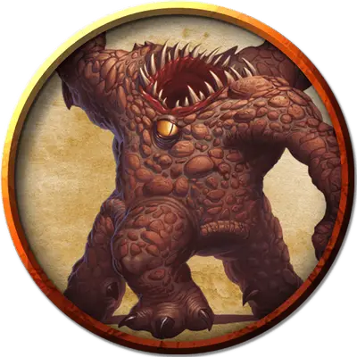

Большой зорн
Big Xorn
Большой Элементаль, нейтральный

Класс Доспеха 19 (природный доспех)
Хиты 103 (9к10 + 54)
Скорость 20 футов, копая 20 футов
| мод | спас | ||
|---|---|---|---|
| СИЛ | 20 | +5 | +5 |
| ЛОВ | 10 | +0 | +0 |
| ТЕЛ | 22 | +6 | +6 |
| мод | спас | ||
|---|---|---|---|
| ИНТ | 11 | +0 | +0 |
| МДР | 10 | +0 | +0 |
| ХАР | 11 | +0 | +0 |
Навыки Восприятие +6, Скрытность +3
Сопротивление урону колющий, рубящий от немагических атак, кроме нанесённых адамантиновым оружием
Чувства тёмное зрение 60 футов, чувство вибрации 60 футов, пассивное Восприятие 16
Языки Терран
Опасность 8 (3900 опыта)
Бонус мастерства +3
Особенности
Скольжение сквозь землю. Зорн может перемещаться, копая, сквозь немагические и необработанные землю и камень. При этом зорн не беспокоит материал, через который перемещается.
Каменный камуфляж. Зорн совершает с преимуществом проверки Ловкости (Скрытность), когда пытается спрятаться на каменистой местности.
Нюх на сокровища. Зорн может определять по запаху местонахождение драгоценных металлов и камней, таких как монеты и ограненные драгоценные камни, в пределах 60 футов от себя.
Действия
Мультиатака. Зорн совершает три атаки когтем и одну атаку укусом.
Коготь. Рукопашная атака оружием: +8 к попаданию, досягаемость 10 футов, одна цель. Попадание: 9 (1к8 + 5) рубящего урона.
Укус. Рукопашная атака оружием: +8 к попаданию, досягаемость 5 футов, одна цель. Попадание: 22 (5к6 + 5) колющего урона.
Описание
До того как он сбежал из неволи и спрятался здесь, зорн был одним из любимых питомцев Халастера, взращенным на постоянной диете из магических драгоценных камней для увеличения размера. Он приходит и уходит проходя сквозь стены и наслаждается тихим уединением этого зала. Успешная проверка Ловкости Сл 16 (Скрытность) позволяет спокойно пересечь комнату не разбудив зорна, но проверка выполняется с помехой, если у существа с собой есть монеты или драгоценные камни, так как зорн даже во сне чувствует запах сокровищ. Обнаружение посторонних в логове вызывает у него ярость и зорн атакует.